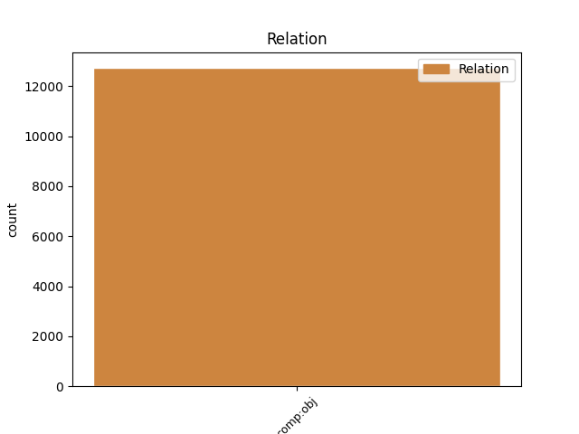
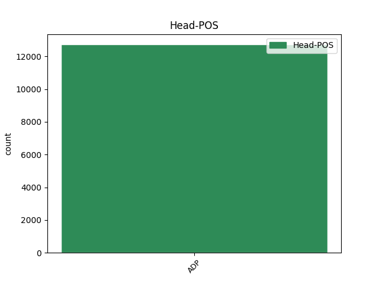
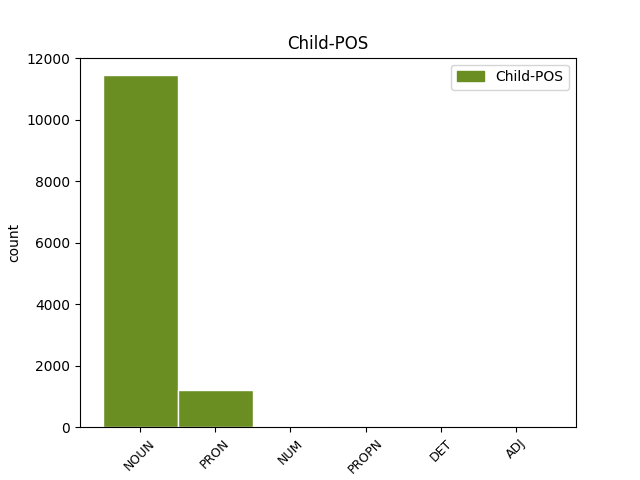

Distribution of features within this leaf



Agreement Rules sorted by frequency.
- When the dependent token is the direct object complements(comp:obj) of the head token, and the head token is ADP and the dependent token is PRON.
1 Desigur _ _ _ _ 0 _ _ _
2 că _ _ _ _ 0 _ _ _
3 după _ _ _ _ 0 _ _ _
4 aprecierile _ _ _ _ 0 _ _ _
5 prea _ _ _ _ 0 _ _ _
6 puțin _ _ _ _ 0 _ _ _
7 favorabile _ _ _ _ 0 _ _ _
8 ale _ _ _ _ 0 _ _ _
9 tatii _ _ _ _ 0 _ _ _
10 asupra _ _ _ _ 0 _ _ _
11 subiectului _ _ _ _ 0 _ _ _
12 ales _ _ _ _ 0 _ _ _
13 de de ADP Spsa AdpType=Prep|Case=Acc 0 _ _ _
14 mine eu PRON Pp1-sa--------s Case=Acc|Number=Sing|Person=1|PronType=Prs|Strength=Strong 13 comp:obj _ _
15 la _ _ _ _ 0 _ _ _
16 concursul _ _ _ _ 0 _ _ _
17 de _ _ _ _ 0 _ _ _
18 Limba _ _ _ _ 0 _ _ _
19 română _ _ _ _ 0 _ _ _
20 de _ _ _ _ 0 _ _ _
21 la _ _ _ _ 0 _ _ _
22 " _ _ _ _ 0 _ _ _
23 Tinerime _ _ _ _ 0 _ _ _
24 " _ _ _ _ 0 _ _ _
25 , _ _ _ _ 0 _ _ _
26 era _ _ _ _ 0 _ _ _
27 exclus _ _ _ _ 0 _ _ _
28 să _ _ _ _ 0 _ _ _
29 mă _ _ _ _ 0 _ _ _
30 aștept _ _ _ _ 0 _ _ _
31 la _ _ _ _ 0 _ _ _
32 vreun _ _ _ _ 0 _ _ _
33 rezultat _ _ _ _ 0 _ _ _
34 frumos _ _ _ _ 0 _ _ _
35 . _ _ _ _ 0 _ _ _
Disagree Examples:
1 Din din ADP Spsa AdpType=Prep|Case=Acc 0 _ _ _
2 cauza _ _ _ _ 0 _ _ _
3 atmosferei atmosferă NOUN Ncfsoy Case=Dat,Gen|Definite=Def|Gender=Fem|Number=Sing 1 comp:obj _ _
4 de _ _ _ _ 0 _ _ _
5 gazon _ _ _ _ 0 _ _ _
6 de _ _ _ _ 0 _ _ _
7 hochei _ _ _ _ 0 _ _ _
8 și _ _ _ _ 0 _ _ _
9 de _ _ _ _ 0 _ _ _
10 băi _ _ _ _ 0 _ _ _
11 reci _ _ _ _ 0 _ _ _
12 și _ _ _ _ 0 _ _ _
13 de _ _ _ _ 0 _ _ _
14 excursii _ _ _ _ 0 _ _ _
15 în _ _ _ _ 0 _ _ _
16 grup _ _ _ _ 0 _ _ _
17 și _ _ _ _ 0 _ _ _
18 în _ _ _ _ 0 _ _ _
19 general _ _ _ _ 0 _ _ _
20 de _ _ _ _ 0 _ _ _
21 castitate _ _ _ _ 0 _ _ _
22 pe _ _ _ _ 0 _ _ _
23 care _ _ _ _ 0 _ _ _
24 reușea _ _ _ _ 0 _ _ _
25 s- _ _ _ _ 0 _ _ _
26 o _ _ _ _ 0 _ _ _
27 creeze _ _ _ _ 0 _ _ _
28 în _ _ _ _ 0 _ _ _
29 jurul _ _ _ _ 0 _ _ _
30 ei _ _ _ _ 0 _ _ _
31 . _ _ _ _ 0 _ _ _
1 Din _ _ _ _ 0 _ _ _
2 cauza _ _ _ _ 0 _ _ _
3 atmosferei _ _ _ _ 0 _ _ _
4 de _ _ _ _ 0 _ _ _
5 gazon _ _ _ _ 0 _ _ _
6 de _ _ _ _ 0 _ _ _
7 hochei _ _ _ _ 0 _ _ _
8 și _ _ _ _ 0 _ _ _
9 de _ _ _ _ 0 _ _ _
10 băi _ _ _ _ 0 _ _ _
11 reci _ _ _ _ 0 _ _ _
12 și _ _ _ _ 0 _ _ _
13 de _ _ _ _ 0 _ _ _
14 excursii _ _ _ _ 0 _ _ _
15 în _ _ _ _ 0 _ _ _
16 grup _ _ _ _ 0 _ _ _
17 și _ _ _ _ 0 _ _ _
18 în _ _ _ _ 0 _ _ _
19 general _ _ _ _ 0 _ _ _
20 de de ADP Spsa AdpType=Prep|Case=Acc 0 _ _ _
21 castitate castitate NOUN Ncfsrn Case=Acc,Nom|Definite=Ind|Gender=Fem|Number=Sing 20 comp:obj _ _
22 pe _ _ _ _ 0 _ _ _
23 care _ _ _ _ 0 _ _ _
24 reușea _ _ _ _ 0 _ _ _
25 s- _ _ _ _ 0 _ _ _
26 o _ _ _ _ 0 _ _ _
27 creeze _ _ _ _ 0 _ _ _
28 în _ _ _ _ 0 _ _ _
29 jurul _ _ _ _ 0 _ _ _
30 ei _ _ _ _ 0 _ _ _
31 . _ _ _ _ 0 _ _ _
1 Din _ _ _ _ 0 _ _ _
2 cauza _ _ _ _ 0 _ _ _
3 atmosferei _ _ _ _ 0 _ _ _
4 de _ _ _ _ 0 _ _ _
5 gazon _ _ _ _ 0 _ _ _
6 de _ _ _ _ 0 _ _ _
7 hochei _ _ _ _ 0 _ _ _
8 și _ _ _ _ 0 _ _ _
9 de _ _ _ _ 0 _ _ _
10 băi _ _ _ _ 0 _ _ _
11 reci _ _ _ _ 0 _ _ _
12 și _ _ _ _ 0 _ _ _
13 de _ _ _ _ 0 _ _ _
14 excursii _ _ _ _ 0 _ _ _
15 în _ _ _ _ 0 _ _ _
16 grup _ _ _ _ 0 _ _ _
17 și _ _ _ _ 0 _ _ _
18 în _ _ _ _ 0 _ _ _
19 general _ _ _ _ 0 _ _ _
20 de _ _ _ _ 0 _ _ _
21 castitate _ _ _ _ 0 _ _ _
22 pe pe ADP Spsa AdpType=Prep|Case=Acc 0 _ _ _
23 care care PRON Pw3--r Case=Acc,Nom|Person=3|PronType=Int,Rel 22 comp:obj _ _
24 reușea _ _ _ _ 0 _ _ _
25 s- _ _ _ _ 0 _ _ _
26 o _ _ _ _ 0 _ _ _
27 creeze _ _ _ _ 0 _ _ _
28 în _ _ _ _ 0 _ _ _
29 jurul _ _ _ _ 0 _ _ _
30 ei _ _ _ _ 0 _ _ _
31 . _ _ _ _ 0 _ _ _
1 Winston _ _ _ _ 0 _ _ _
2 detesta _ _ _ _ 0 _ _ _
3 aproape _ _ _ _ 0 _ _ _
4 orice _ _ _ _ 0 _ _ _
5 femeie _ _ _ _ 0 _ _ _
6 și _ _ _ _ 0 _ _ _
7 mai _ _ _ _ 0 _ _ _
8 ales _ _ _ _ 0 _ _ _
9 pe pe ADP Spsa AdpType=Prep|Case=Acc 0 _ _ _
10 cele acela PRON Pd3fpr Case=Acc,Nom|Gender=Fem|Number=Plur|Person=3|PronType=Dem 9 comp:obj _ _
11 tinere _ _ _ _ 0 _ _ _
12 și _ _ _ _ 0 _ _ _
13 drăguțe _ _ _ _ 0 _ _ _
14 . _ _ _ _ 0 _ _ _
1 Femeile _ _ _ _ 0 _ _ _
2 , _ _ _ _ 0 _ _ _
3 și _ _ _ _ 0 _ _ _
4 mai _ _ _ _ 0 _ _ _
5 ales _ _ _ _ 0 _ _ _
6 cele _ _ _ _ 0 _ _ _
7 tinere _ _ _ _ 0 _ _ _
8 , _ _ _ _ 0 _ _ _
9 erau _ _ _ _ 0 _ _ _
10 întotdeauna _ _ _ _ 0 _ _ _
11 cele _ _ _ _ 0 _ _ _
12 mai _ _ _ _ 0 _ _ _
13 fanatice _ _ _ _ 0 _ _ _
14 adepte _ _ _ _ 0 _ _ _
15 ale _ _ _ _ 0 _ _ _
16 Partidului _ _ _ _ 0 _ _ _
17 , _ _ _ _ 0 _ _ _
18 cele _ _ _ _ 0 _ _ _
19 care _ _ _ _ 0 _ _ _
20 înghițeau _ _ _ _ 0 _ _ _
21 slogane _ _ _ _ 0 _ _ _
22 , _ _ _ _ 0 _ _ _
23 care _ _ _ _ 0 _ _ _
24 făceau _ _ _ _ 0 _ _ _
25 spionaj _ _ _ _ 0 _ _ _
26 amator _ _ _ _ 0 _ _ _
27 și _ _ _ _ 0 _ _ _
28 te _ _ _ _ 0 _ _ _
29 turnau _ _ _ _ 0 _ _ _
30 dacă _ _ _ _ 0 _ _ _
31 te _ _ _ _ 0 _ _ _
32 miroseau _ _ _ _ 0 _ _ _
33 de de ADP Spsa AdpType=Prep|Case=Acc 0 _ _ _
34 neortodoxie neortodoxie NOUN Ncfsrn Case=Acc,Nom|Definite=Ind|Gender=Fem|Number=Sing 33 comp:obj _ SpaceAfter=No
35 . _ _ _ _ 0 _ _ _